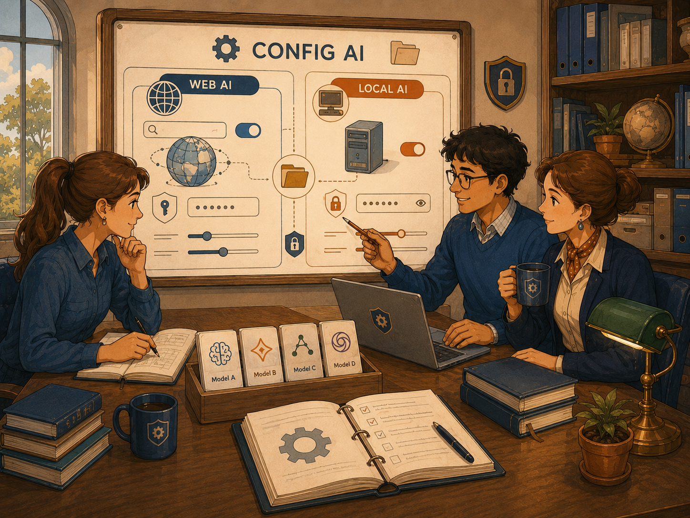
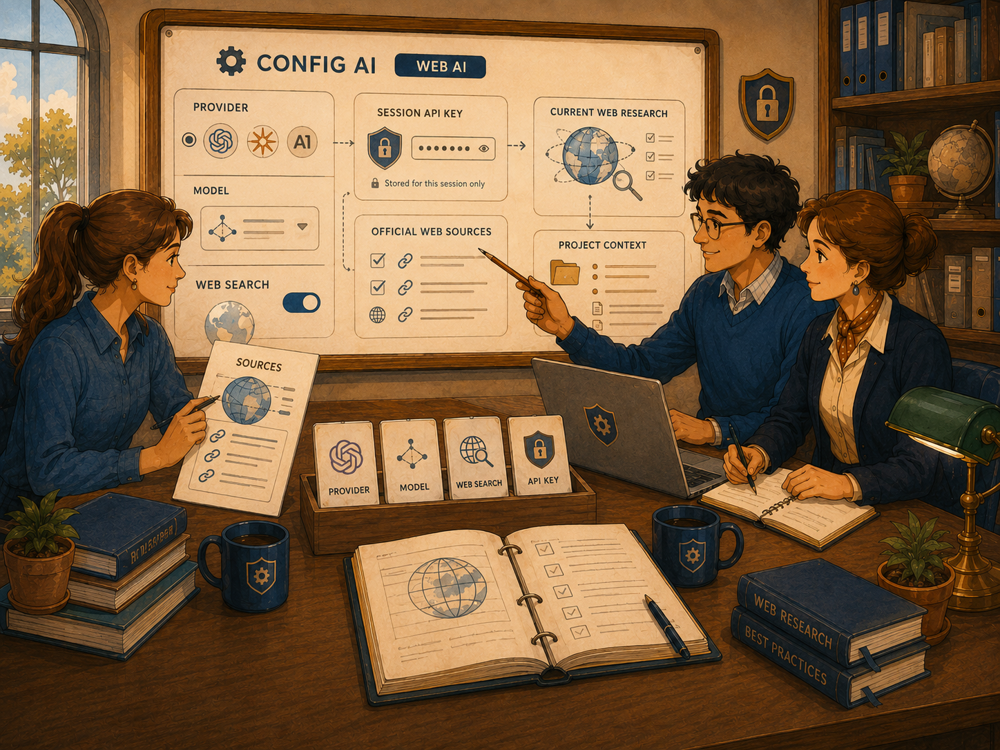
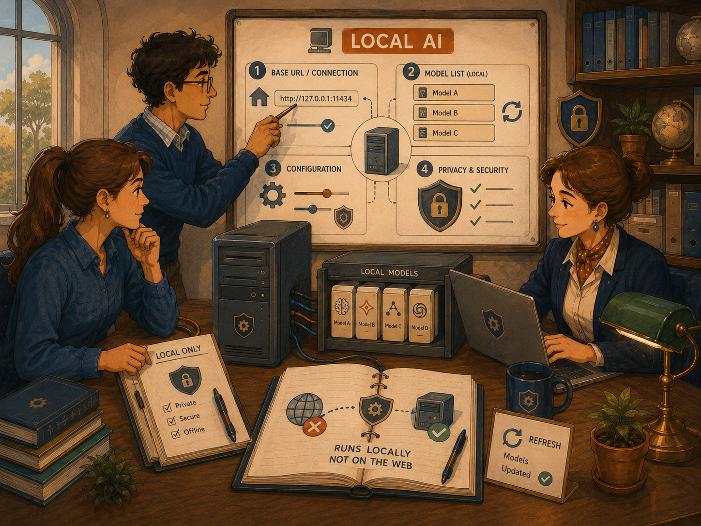
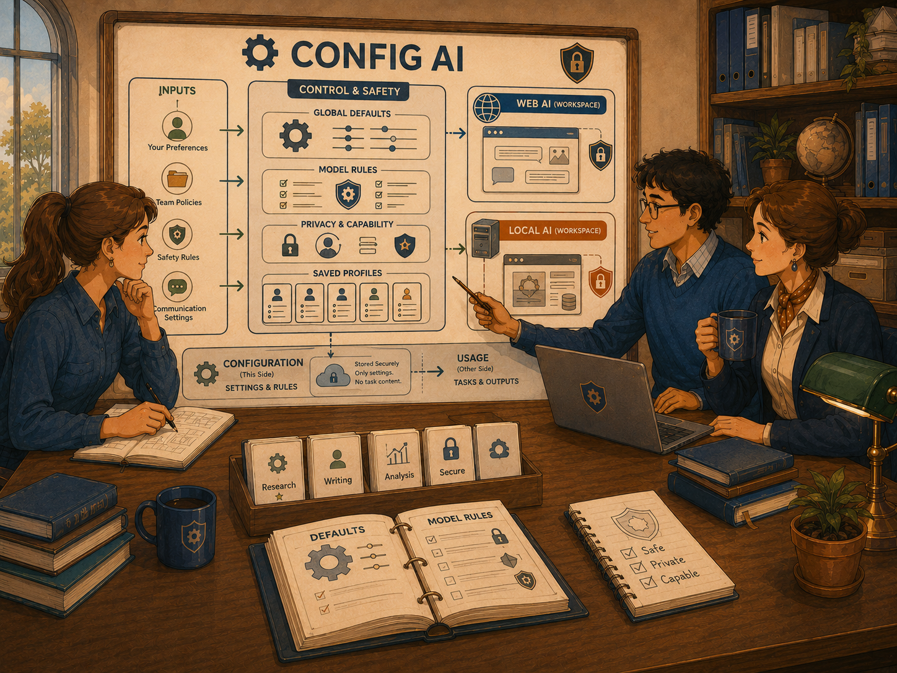

KANDA Reasoner Help
First-Time User TutorialConfig AI
Configure the global Web AI gateway and model or the global Local AI endpoint and model, while keeping active project identity and source authority inside each workflow.

What Config AI Means
Config AI is the global settings area for AI connections and model selection. It does not hold the active project itself.
In plain English: Config AI chooses which AI service KANDA may call and which model it should use. The workflow still decides which project is active and what exact information is sent.
The two sub-tabs are Config Web AI and Config Local AI.
What This Tab Does
- Choose the Web AI gateway and session credential.
- Refresh and filter the Web AI model catalog.
- Select the global Web AI model.
- Inspect capabilities and privacy information.
- Set the Local AI base URL.
- Refresh locally available models.
- Select the global Local AI model.
- Read connection and catalog status.
Config AI does not store the active Project Root, approve a project payload, or grant source-writing authority.
Before You Start
Use Config Web AI for a web-connected provider, current external information, provider catalogs, and API-key-based access.
Use Config Local AI for an already running OpenAI-compatible local model service.
The Safest First-Time Workflow
Step 1 - Open the correct sub-tab
Choose Config Web AI or Config Local AI.
Step 2 - Enter only required connection information
Choose the Web gateway and credential, or enter the real local base URL.
Step 3 - Refresh the model list
Click the appropriate refresh button and wait for status.
Step 4 - Select one model
Choose a model from the available list.
Step 5 - Read status and capability information
Confirm the catalog, credential, model, capabilities, privacy, and active configuration.
Step 6 - Return to the workflow tab
The workflow will use the global setting but still resolve its own active project and task context.
Config Web AI

Gateway
Selects the supported web AI service KANDA will contact.
API key
Accepts the selected gateway's credential. The field hides typed characters and is described as session-only.
Load Environment Key
Looks for the expected key in the process or Windows User environment.
Credential
Shows the credential source or availability.
Model
Shows the visible Web AI models and makes the selected entry the global Web AI model.
Refresh Models
Requests the current model catalog from the selected gateway.
Free models only
Filters the visible catalog. Free does not mean private, better, safer, or suitable for every task.
Catalog status
Reports loading, availability, or errors.
Capabilities
Summarizes structured-output support, context window, and cost label.
Privacy
Shows the gateway profile's privacy summary.
Web AI First-Time Setup
- Select the Gateway.
- Enter the session-only key or load the environment key.
- Confirm Credential status.
- Set the Free models only filter deliberately.
- Click Refresh Models.
- Wait for Catalog status.
- Select one model.
- Read Capabilities.
- Read Privacy.
- Return to the Web AI workflow.
Config Local AI

OpenAI-compatible base URL
The address KANDA uses to contact the local model service. The visible placeholder is http://127.0.0.1:11434/v1, but your actual service may use another address.
Global Local AI model
Shows the current model and models returned by the local service.
Refresh Local AI Models
Requests the available model list from the configured local service.
Status
Shows the catalog state and active Local AI configuration summary.
Global Tool ownership
This setting is shared across KANDA workflows and stores no active Project identity, Project Root, Project Support path, source snapshot, or write authority.
Local AI First-Time Setup
- Start the local model service outside KANDA.
- Confirm its OpenAI-compatible base URL.
- Enter the base URL.
- Click Refresh Local AI Models.
- Read Status.
- Select the global Local AI model.
- Return to the Local AI workflow.
- Confirm the workflow's active project before asking.
Tool-versus-Project Boundary

Tool state includes gateway, session credential, Web AI model, free-only filter, local base URL, Local AI model, and catalog state.
Project state includes the active Project Root, files, source snapshot, task request, exact payload, write authority, and validation responsibility.
In plain English: Config AI chooses the telephone service and the person answering the call. The workflow decides which project is being discussed and what information is allowed into that call.
What Is Shared Globally
Changing Config AI may affect Local AI chat, Web AI chat, architecture assistance, code or docstring assistance, Error Memory assistance, Freeze assistance, and other tabs using Config AI.
Do not change the global model during important work without understanding that other tabs may use the new selection.
Session Keys and Environment Keys
A session-only key is retained for the running application session.
An environment key is stored outside the project and loaded by the expected variable name.
Never place a key in source code, Git, patch ZIPs, validation evidence, screenshots, reports, or unrelated provider requests.
Choosing a Model
Consider web access, structured output, context window, cost, speed, privacy, availability, code reasoning, and response quality.
The most expensive model is not automatically best. A free model is not automatically safest. A large context window does not guarantee correct use of all context.
What Success Looks Like
Web AI
- Correct gateway selected
- Credential recognized
- Catalog loaded
- Model selected
- Capabilities visible
- Privacy summary read
Local AI
- Local service running
- Correct base URL entered
- Catalog refreshed
- Model selected
- Status shows active configuration
Common Mistakes
- Entering a project path in Config AI
- Assuming the Local AI placeholder URL is always correct
- Refreshing Web AI models without a credential
- Assuming free means private
- Selecting a model without reading capabilities
- Changing the global model during another workflow
- Treating model configuration as source-write authority
If Something Goes Wrong
Environment key not found
Confirm the expected variable name and restart KANDA after environment changes when necessary.
Web catalog does not load
Check gateway, credential, internet connection, provider availability, and status.
No Web AI model is visible
Adjust Free models only and refresh again.
Local model refresh fails
Confirm the service is running, the base URL is correct, and the service exposes an OpenAI-compatible catalog.
A workflow reports no model configured
Confirm the global selection, then reopen or refresh the workflow.
First-Time Checklist
Config Web AI
- Correct gateway
- Correct credential
- Credential status checked
- Catalog refreshed
- Filter understood
- Model selected
- Capabilities and Privacy read
Config Local AI
- Local service installed and running
- Correct OpenAI-compatible base URL
- Local models refreshed
- Model selected
- Status checked
Before returning to a workflow
- Correct AI type chosen
- Global model confirmed
- Active project will be selected in the workflow
- Exact payload will be reviewed there
- No source-writing authority assumed
Important Safety Boundary
Config AI chooses global connection and model settings. It does not choose the active project, approve the exact payload, authorize source modification, validate a patch, or freeze behavior.
Each workflow must still resolve the active project, build its own request identity, decide appropriate context, preserve human confirmation, and validate resulting changes separately.
Final Rule
Configure the connection and model globally, but select the project, review the payload, and authorize any source change only inside the specific governed workflow that needs it.